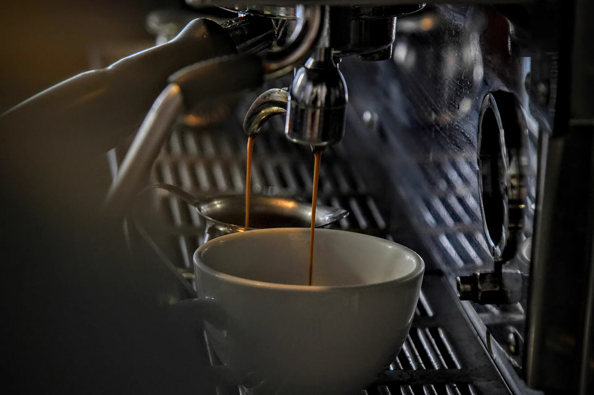
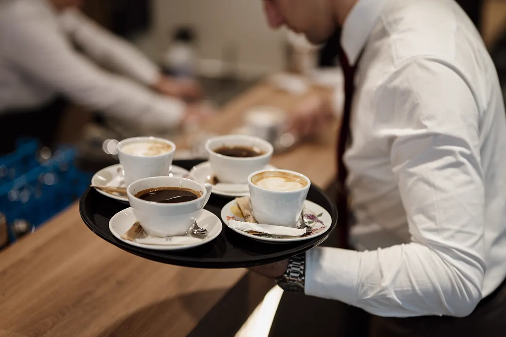
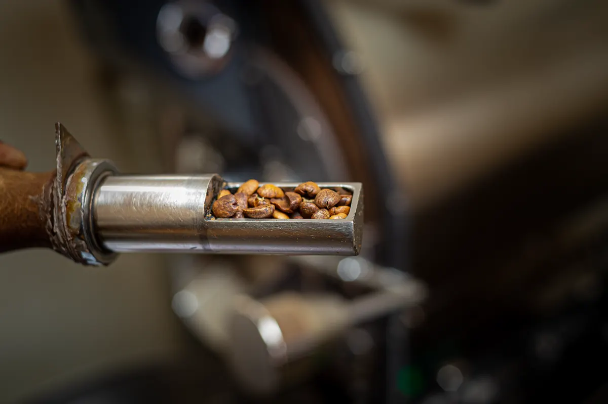
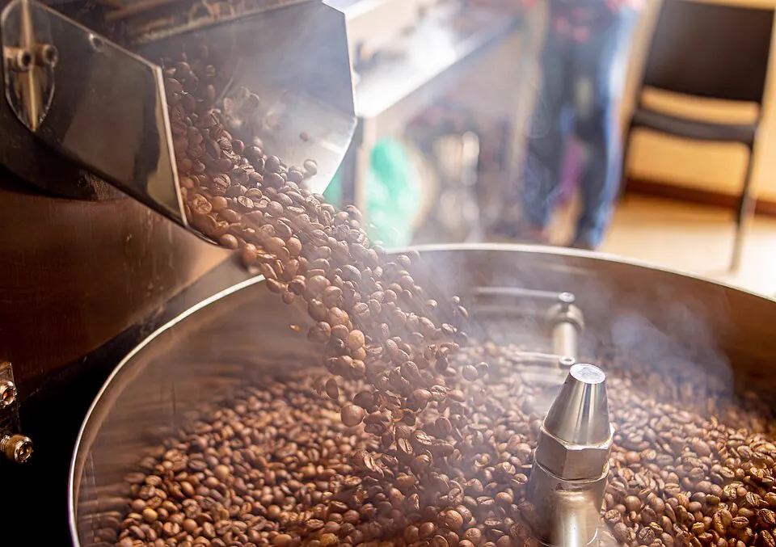

Обсмажувальня і кавовий бар на Подолі
Свіже зерно щотижня, еспресо й фільтр щодня з 8:00 до 20:00.
Як нас знайти
Поділ
Київ Подивитися район
Київ Подивитися район
- Щодня
- 8:00–20:00
- Обсмаження
- Вівторок
- ПомелПід турку, гейзер, еспресо чи фільтр

Меню бару і зерно
Рослинне молоко без доплати. Замовити зерно додому

Як ми обсмажуємо зерно
Одна партія в барабані займає дванадцять хвилин. Ось що відбувається із зеленою кавою до того, як вона потрапить у пакет.
-
01 Перебираємо зелене зерно
Перед обсмаженням висипаємо зерно на кошик і вручну прибираємо биті та недозрілі зерна.
Температуракімнатна
-

Беремо пробу щупом
Кожні тридцять секунд дивимося на колір. Після першого тріску для фільтра зупиняємо раніше, для еспресо ведемо далі.
Температурадо 210 °C
-

Охолоджуємо за чотири хвилини
Лоток з мішалкою забирає тепло, щоб зерно не допеклося. Пакуємо наступного ранку.
Температурадо 30 °C